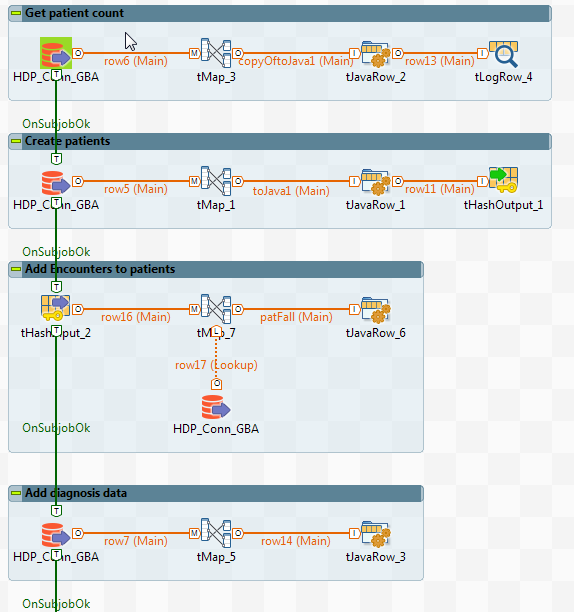

BBMRI.de/GBA Implementation Guide
1.2.0 - CI Build
BBMRI.de/GBA Implementation Guide
1.2.0 - CI Build
BBMRI.de/GBA Implementation Guide - Local Development build (v1.2.0). See the Directory of published versions
This section describes how to build an ETL-process and fill the Blaze Store with Talend Open Studio for Data Integration and Hapi FHIR Api. This instructions were originally writen and tested by Marko Wegehaupt from Wuerzburg in november 2019.
A new routine must be created in Talend Open Studio for Data Integration. In this manual it is called FHIR_API_Wrapper. click on „Edit libraries of the Routines“ and import the following libraries from hapi-fhir-4.0.0-standard-distribution to solve imports.

Boolean returnCode;
FHIR_API_Wrapper temp;
globalMap.put("FHIR", temp=new FHIR_API_Wrapper());
returnCode = ((FHIR_API_Wrapper) globalMap.get("FHIR")).doPatient(toJava1.cPatId, toJava1.cBirthDate, toJava1.cDeceased, toJava1.cGender, toJava1.sourceFlag, toJava1.lastRowFlag);
or
returnCode = ((FHIR_API_Wrapper) globalMap.get("FHIR")).addEncounterToPatient(patFall.cPatId, patFall.FallNr, patFall.RecId,patFall.anfang, patFall.ende, "p70");
bundle = new Bundle();
bundleCounter++;
bundle.setType(Bundle.BundleType.TRANSACTION);
bundle.setId(String.valueOf(bundleCounter));
bdlMap.put(String.valueOf(bundleCounter), bundle);
Patient patient = new Patient();
IdDt patRand=IdDt.newRandomUuid();
patient.setId(cPatId); // argument from method call
patientRandMap.put(cPatId,patRand.getValueAsString());
patientCounter++;
Meta m= new Meta();
m.addProfile("https://fhir.bbmri.de/StructureDefinition/Patient");
patient.setMeta(m);
switch (geschlecht){
case "male": patient.setGender(AdministrativeGender.MALE); break;
case "female": patient.setGender(AdministrativeGender.FEMALE); break;
default: patient.setGender(AdministrativeGender.UNKNOWN);
}
patient.setId(cPatId);
if(geburtsDatum!=null)
patient.setBirthDate(geburtsDatum);
if(sterbeDatum!=null)
patient.setDeceased(new DateTimeType(sterbeDatum));
patientMap.put(patient.getId(),patient);
System.err.println("size after addition: "+patientMap.size());
bundle.addEntry()
.setFullUrl(patRand.getValueAsString())
.setResource(patient)
.getRequest()
.setUrl("Patient/"+patient.getId())
.setMethod(HTTPVerb.PUT);
patientToBundle.put(patient.getId(), bundle.getId());
Condition condition = new Condition();
condition
.getCode()
.addCoding()
.setSystem("http://fhir.de/CodeSystem/dimdi/icd-10-gm")
.setVersion("2016")
.setCode(code)
.setDisplay(display.trim());
condition.setId(recId);
if(obEncId!=null)
condition.setEncounter(new Reference("Encounter/fn"+obEncId));
if(onset!=null)
condition.setOnset(new DateTimeType(onset));
if(abatement!=null)
condition.setAbatement(new DateTimeType(abatement));
condition.getClinicalStatus()
.addCoding()
.setSystem("http://terminology.hl7.org/CodeSystem/condition-clinical")
.setCode("resolved");
condition.setSubject(new Reference("Patient/"+patientMap.get(obPatId).getId()));
Bundle lookedUpBundle=bdlMap.get(patientToBundle.get(obPatId));
lookedUpBundle.addEntry()
.setResource(condition)
.setFullUrl(IdDt.newRandomUuid().getValueAsString())
.getRequest()
.setUrl("Condition/"+condition.getId())
.setMethod(HTTPVerb.PUT);
System.err.println("condition added.");
FhirContext ctx = FhirContext.forR4();
// Create a client and PUT the transaction to the server
IGenericClient client = ctx.newRestfulGenericClient("http://FHIRSERVER:8080/fhir");
// Create an HTTP basic auth interceptor
String username = "admin";
String password = "psw";
IClientInterceptor authInterceptor = new BasicAuthInterceptor(username, password);
client.registerInterceptor(authInterceptor);
System.err.println("number of bundles: "+bdlMap.size());
for (Bundle bdlIt : bdlMap.values()) {
System.out.println(ctx.newJsonParser().setPrettyPrint(true).encodeResourceToString(bdlIt));
Bundle resp = client.transaction().withBundle(bdlIt).execute();
System.out.println(ctx.newJsonParser().setPrettyPrint(true).encodeResourceToString(resp));
}


@ResourceDef(name="Specimen", profile="https://fhir.bbmri.de/StructureDefinition/Specimen")
public class GBASpecimen extends Specimen {
private static final long serialVersionUID = 1L;
/**
* Each extension is defined in a field. Any valid HAPI Data Type
* can be used for the field type. Note that the [name=""] attribute
* in the @Child annotation needs to match the name for the bean accessor
* and mutator methods.
*/
@Child(name="temperatureCC")
@Extension(url="https://fhir.bbmri.de/StructureDefinition/StorageTemperature", definedLocally=true, isModifier=false)
@Description(shortDefinition="The temperature")
private CodeableConcept myTemperatureCC;
@Child(name="orgaRef")
@Extension(url="https://fhir.bbmri.de/StructureDefinition/Custodian", definedLocally=true, isModifier=false)
@Description(shortDefinition="The custodian")
private Reference myOrgaRef;
@Child(name="diagnoseCC")
@Extension(url="https://fhir.bbmri.de/StructureDefinition/SampleDiagnosis", definedLocally=true, isModifier=false)
@Description(shortDefinition="SampleDiagnosis")
private CodeableConcept mySampleDiagnosisCC;
@Child(name="typeIBDWCC")
@Extension(url="http://ibdw.de/fhir/StructureDefinition/SampleType", definedLocally=true, isModifier=false)
@Description(shortDefinition="SampleType")
private CodeableConcept myTypeIBDWCC;
/**
* It is important to override the isEmpty() method, adding a check for any
* newly added fields.
*/
@Override
public boolean isEmpty() {
return super.isEmpty()
&& ElementUtil.isEmpty(myTemperatureCC)
&& ElementUtil.isEmpty(myOrgaRef)
&& ElementUtil.isEmpty(mySampleDiagnosisCC)
&& ElementUtil.isEmpty(myTypeIBDWCC);
}
/********
* Accessors and mutators follow
*
* IMPORTANT:
* Each extension is required to have an getter/accessor and a setter/mutator.
* You are highly recommended to create getters which create instances if they
* do not already exist, since this is how the rest of the HAPI FHIR API works.
********/
/** Getter for CC */
public CodeableConcept getTemperatureCC() {
if (myTemperatureCC == null) {
myTemperatureCC = new CodeableConcept();
}
return this.myTemperatureCC;
}
public CodeableConcept getSampleDiagnosisCC() {
if (mySampleDiagnosisCC == null) {
mySampleDiagnosisCC = new CodeableConcept();
}
return this.mySampleDiagnosisCC;
}
public CodeableConcept getTypeIBDWCC() {
if (myTypeIBDWCC == null) {
myTypeIBDWCC = new CodeableConcept();
}
return this.myTypeIBDWCC;
}
public Reference getOrgaRef() {
if (myOrgaRef == null) {
myOrgaRef = new Reference();
}
return this.myOrgaRef;
}
@Override
public ResourceType getResourceType(){
return ResourceType.Specimen;
}
@Override
public FhirVersionEnum getStructureFhirVersionEnum() {
return FhirVersionEnum.R4;
}
}
IG © 2020+ bbmri.de. Package de.bbmri.fhir#1.2.0 based on FHIR 4.0.1. Generated 2021-03-03
Links: Table of Contents |
QA Report
|